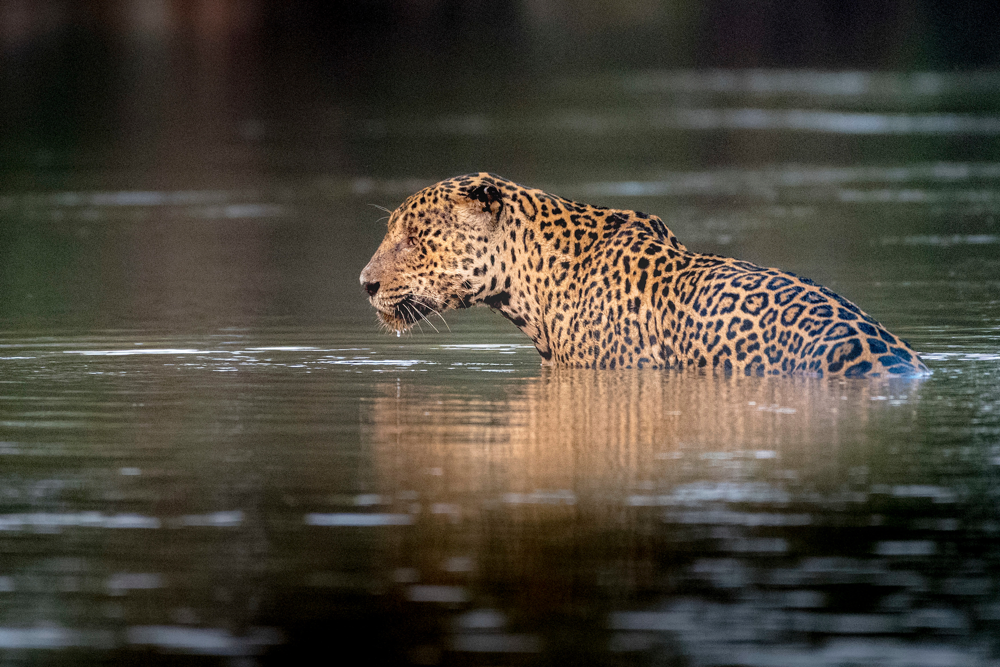

El jaguar, yaguar o yaguareté (Panthera onca) es un carnívoro félido de la subfamilia de los Panterinos y género Panthera. Es la única de las cinco especies actuales de este género que se encuentra en América. También es el mayor félido de América y el tercero del mundo, después del tigre (Panthera tigris) y el león (Panthera leo). Su distribución actual se extiende desde el extremo sur de Estados Unidos continuando por gran parte de México, América Central y América del Sur hasta el norte y noreste de Argentina. Habita principalmente en zonas tropicales secas y húmedas, pero también vive en matorrales áridos. Su dieta es muy amplia, puede cazar grandes presas, incluido ganado, o pequeños animales. Exceptuando algunas poblaciones en Arizona (suroeste de Tucson), esta especie ya ha sido prácticamente extirpada en los Estados Unidos desde principios de la década de 1900.N 2 Se encuentra emparentado y se asemeja mucho en apariencia física al leopardo (Panthera pardus), pero generalmente es de mayor tamaño, cuenta con una constitución más robusta y su comportamiento y hábitat son más acordes a los del tigre (Panthera tigris). Si bien prefiere las selvas densas y húmedas, puede acomodarse a una gran variedad de terrenos boscosos o abiertos. Está estrechamente asociado a la presencia de agua y destaca, junto con el tigre, por ser un félido al que le gusta nadar. Es fundamentalmente solitario. Caza tendiendo emboscadas, siendo oportunista a la hora de elegir las presas. Es una especie clave para la estabilización de los ecosistemas en los que habita; al ser un superpredador, regula las poblaciones de las especies que captura. Los ejemplares adultos tienen una mordedura excepcionalmente potente, incluso en comparación con otros grandes félidos, lo que les permite perforar los caparazones de reptiles acorazados como las tortugas y utilizar un método poco habitual para matar: ataca directamente la cabeza de la presa entre las orejas para propinar un mordisco letal que atraviesa el cráneo con sus colmillos alcanzando al cerebro. Panthera onca está calificado en la Lista Roja de la UICN como «especie casi amenazada» y su número está en declive. Entre los factores que lo amenazan se incluyen la pérdida y la fragmentación de su hábitat. A pesar de que el comercio internacional de ejemplares de esta especie o sus partes está prohibido, este félido muere con frecuencia a mano de los humanos, especialmente en conflictos con ganaderos. Aunque reducida, su distribución geográfica continúa siendo amplia. A lo largo de la historia, esta distribución le ha otorgado un lugar prominente en la mitología de numerosas culturas indígenas americanas, como los mayas y los aztecas.
En sus zonas nativas recibe diferentes denominaciones en español como jaguar, yaguar, yaguareté,N 1 otorongo, jaguarete, tigre o tigre americano. Los mexicas lo llamaban ocelotl, aunque también utilizaban este nombre para el ocelote (Leopardus pardalis), y podrían referirse a él como tlatlauhquiocélotl.91011 En gran parte de Hispanoamérica desde la llegada de los españoles es común llamar a este animal «tigre» aunque es remoto el parecido con el tigre asiático (Panthera tigris) del cual procede el apelativo. En las zonas de países de habla castellana que están próximas a la frontera con Brasil, se emplea también la denominación brasileña en portugués: onça-pintada. En cuanto a las lenguas aborígenes americanas, en maya se le llama balam,12 en mapuche es llamado nawel,13 en quechua uturunku o unqa y en bribri namú.14 Yaguar y yaguareté provienen del guaraní yaguar 'fiera', y eté 'verdadero', y probablemente llegó al español por conducto del portugués o del francés, lo cual explica la desvirtuación hacia la forma con j: jaguar.15 El origen del nombre se ha supuesto como procedente de yaguá-eté, que significaría «fiera de verdad» o «auténtica fiera»; en efecto, antes de 1492 los guaraníes utilizaban la palabra yaguá para referirse a los distintos carnívoros o «fieras», pero ante la presencia de los feroces perros de combate traídos por los europeos el término guaraní yaguá pasó a significar solo 'perro' (actualmente se aplica este término en guaraní a cualquier perro),16 mientras que Panthera onca era el yaguá-eté, es decir: la fiera o animal feroz por antonomasia, siendo la más peligrosa de todas las que los integrantes de esa etnia conocían y a quien más temían. De allí surgió la denominación yaguareté, usada especialmente en los países del área guaranítica: Argentina y Paraguay, y de modo abreviado, yaguar, o por error en la pronunciación sobre textos no en castellano: jaguar con «j». El primer componente de su designación taxonómica, Panthera, es un término latino derivado a su vez de la palabra griega πάνθηρ (leopardo, la especie tipo del género). Se ha dicho que esta palabra deriva de παν- «todo» y θήρ «bestia», aunque podría ser una etimología popular17 o que tuviera su origen en pundarikam (literalmente «animal amarillento»), la palabra sánscrita para «tigre».18 Onca proviene del portugués onça, con la cedilla sustituida por razones tipográficas, aunque en España se usa más habitualmente para la onza o leopardo de las nieves (Panthera uncia) y en Latinoamérica para el gato onza u ocelote. Deriva del latín lyncis, lince,19 que perdió la letra «L» al confundirse con el artículo definido (italiano lonza, francés antiguo l'once).
Panthera onca, es el único miembro del género Panthera existente en la actualidad en el Nuevo Mundo. Pruebas de ADN muestran que esta especie, el león (Panthera leo), el tigre (Panthera tigris), el leopardo (Panthera pardus), el leopardo de las nieves (Panthera uncia), y la pantera nebulosa (Neofelis nebulosa) comparten un antepasado común, y que este grupo tiene una edad de entre 6 y 10 millones de años; el registro fósil indica que la aparición de Panthera se produjo hace entre 2 y 3,8 millones de años. Generalmente los estudios filogenéticos han demostrado que la pantera nebulosa es la especie basal de este grupo.22242526 La posición de las especies restantes varía entre diversos estudios y en la práctica permanece sin resolver. Basándose en pruebas morfológicas, el zoólogo británico Reginald Pocock llegó a la conclusión de que el pariente más cercano a Panthera onca era el leopardo. Sin embargo, las pruebas de ADN no son concluyentes y su posición en relación a otras especies varía de un estudio a otro.22242526 Fósiles de especies extintas de Panthera, como por ejemplo el jaguar europeo (Panthera gombaszoegensis) y el león americano (Panthera leo atrox), presentan características propias tanto del león como de Panthera onca. El análisis del ADN mitocondrial de Panthera onca indica que el linaje de la especie se remonta a entre hace 280 000 y 510 000 años, por lo tanto es más moderna de lo que sugiere el registro fósil.
Al igual que el resto de los félidos, es un carnívoro estricto, esto es, que se alimenta exclusivamente de carne. Es un cazador solitario y oportunista y su dieta abarca más de 80 especies diferentes. Prefiere presas grandes, fundamentalmente mamíferos diurnos, como capibaras, tapires, pecaríes y en ocasiones ciervos, pero también caza caimanes e incluso anacondas adultas, aunque incluye entre sus presas prácticamente de todas las especies pequeñas que pueda capturar, como ranas, agutíes, aves grandes, peces, puercoespines o tortugas;29376061 un estudio llevado a cabo en la Reserva natural de Cockscomb de Belice reveló que los ejemplares que vivían en la zona tenían una dieta compuesta principalmente por armadillos y pacas. En algunas zonas, como Brasil y Venezuela, en su hábitat natural también se cría ganado, por lo que algunos individuos pueden especializarse en la captura de animales domésticos. Aunque utiliza la técnica de asestar un mordisco profundo en el cuello para provocar la asfixia en sus presas, típica del género Panthera, prefiere un método de matar único entre los félidos (especialmente con el capibara): muerde directamente los huesos temporales del cráneo entre las orejas de las presas con sus colmillos, perforándolos hasta alcanzar el cerebro. Esta técnica podría ser el resultado de una adaptación para abrir los caparazones de las tortugas: después de las extinciones del Pleistoceno superior, los reptiles acorazados como las tortugas se habrían convertido en la base de presas abundantes para el jaguar. Una vez que rompe el caparazón, simplemente mete la pata dentro y extrae la carne. El mordisco en el cráneo lo utiliza con los mamíferos en particular; con reptiles como los caimanes, puede saltar sobre la espalda de la presa e inmovilizarla partiéndole las vértebras cervicales. Con presas como los perros, asestar un zarpazo para aplastarles el cráneo puede resultar suficiente. Este félido caza generalmente tendiendo emboscadas. Es un cazador más dado a preparar emboscadas que a la persecución. Se desplaza sigilosamente por caminos del bosque, escuchando y acechando la presa antes de lanzarse sobre ella o prepararle una emboscada. Ataca desde su escondrijo con un salto rápido, habitualmente desde un punto ciego del objetivo; la capacidad de emboscada de esta especie está considerada casi sin parangón en el mundo animal tanto por los indígenas como por los investigadores de campo, y son probablemente producto de su papel como superpredador en distintos entornos. La emboscada puede incluir saltar dentro del agua para perseguir la presa, pues es capaz de llevar una de buen tamaño nadando; su fuerza es tal que puede cargar con cadáveres tan grandes como el de un novillo hasta lo alto de un árbol que sobresalga del nivel del agua Después de matar a la presa, la arrastra entre la espesura o a un lugar escondido. Primero come el cuello y el pecho, en lugar de la parte central, sigue con el corazón y los pulmones y después las espalderas. Se estima la necesidad alimenticia de un ejemplar de 34 kg (en el extremo inferior del rango de pesos de la especie) en 1,4 kilogramos de comida al día. Para animales en cautividad de entre 50 y 60 kg, se recomiendan más de dos kilogramos de carne diarios.64 En la naturaleza, el consumo es naturalmente más errático; los félidos salvajes gastan una energía considerable para capturar y matar las presas y pueden consumir hasta 25 kg de carne de una vez, y después pasar periodos de inanición. A diferencia de las demás especies del género Panthera, no existe ningún registro de ataque sistemático a humanos y apenas hay casos documentados de jaguares atacando a humanos. La mayoría de los pocos casos de ataques a personas muestran que el animal atacante es o bien viejo, con los dientes dañados, o está herido. En ocasiones, si se asustan, los ejemplares en cautividad pueden arremeter contra los empleados del zoo.